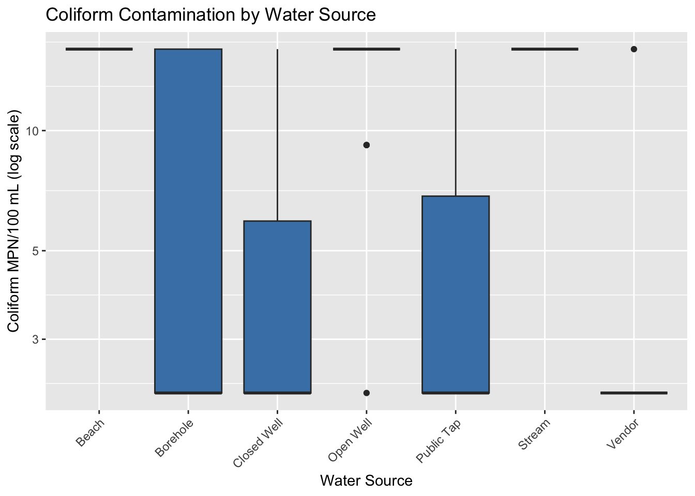
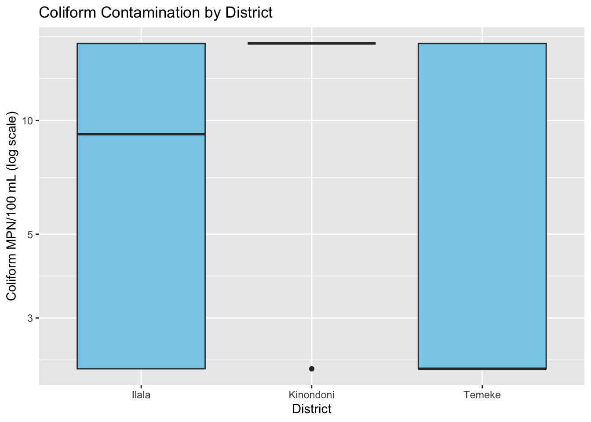
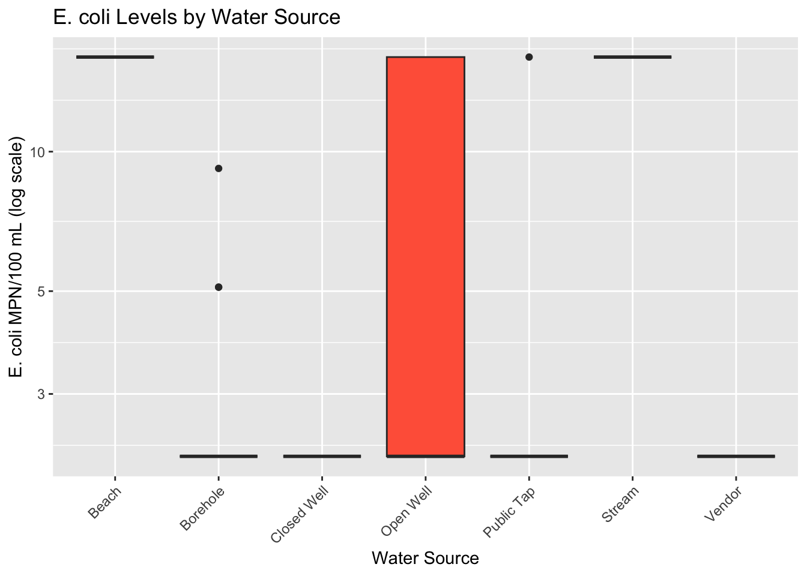
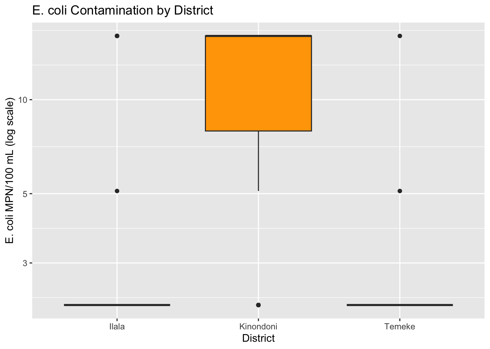
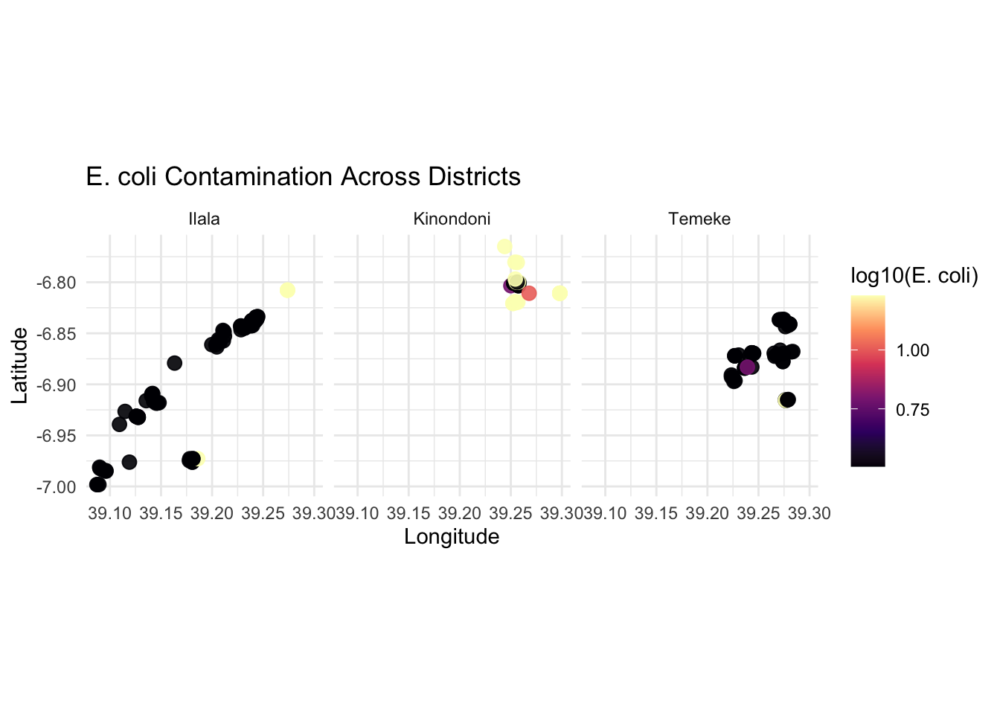
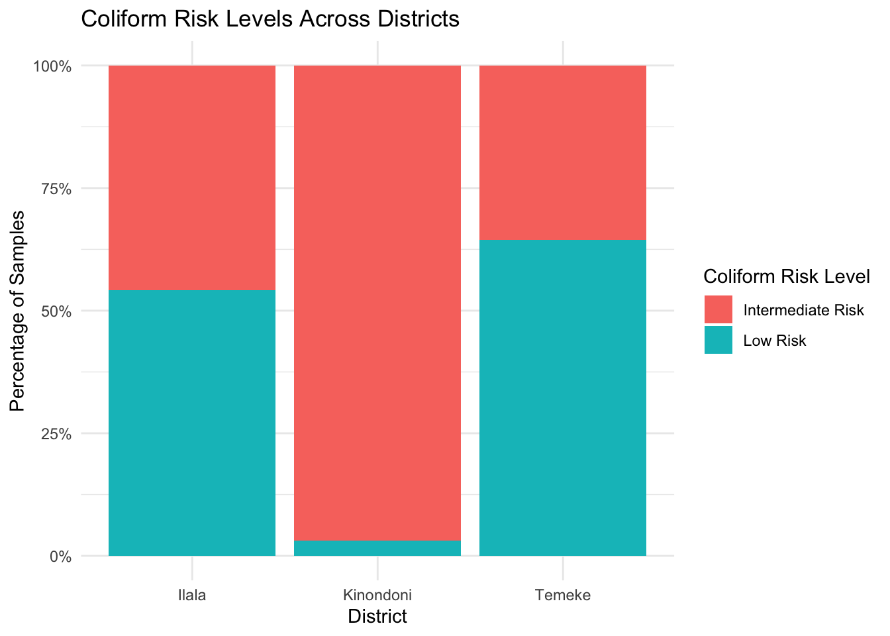
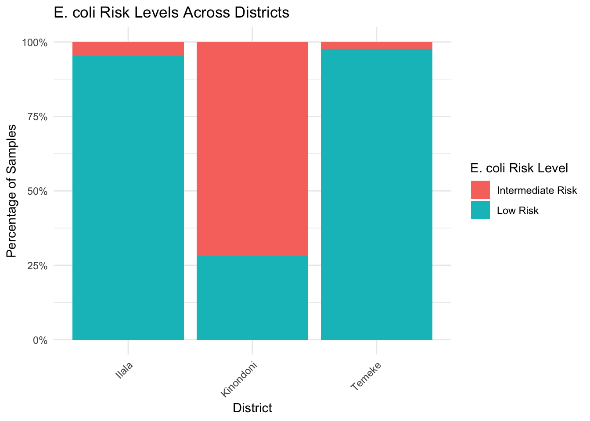

# Introduction
# This data is a microbial water quality data collected in Dar es Salaam, Tanzania. It was collected last summer and the aim was to assess the level of microbial water quality from different water sources in three districts of Dar es Salaam by tessting for the presence of coliforms and E.coli which serves as an indicator for fecal contamination in water sources. final_project.qmd
Quarto
Quarto enables you to weave together content and executable code into a finished document. To learn more about Quarto see https://quarto.org.
Running Code
When you click the Render button a document will be generated that includes both content and the output of embedded code. You can embed code like this:
You can add options to executable code like this
library(tidyverse)── Attaching core tidyverse packages ──────────────────────── tidyverse 2.0.0 ──
✔ dplyr 1.1.4 ✔ readr 2.1.5
✔ forcats 1.0.1 ✔ stringr 1.5.2
✔ ggplot2 4.0.0 ✔ tibble 3.3.0
✔ lubridate 1.9.4 ✔ tidyr 1.3.1
✔ purrr 1.1.0
── Conflicts ────────────────────────────────────────── tidyverse_conflicts() ──
✖ dplyr::filter() masks stats::filter()
✖ dplyr::lag() masks stats::lag()
ℹ Use the conflicted package (<http://conflicted.r-lib.org/>) to force all conflicts to become errorslibrary(dplyr)
library(readr)
water_raw <- read_csv("data_raw/water_tz_full.csv")Rows: 160 Columns: 10
── Column specification ────────────────────────────────────────────────────────
Delimiter: ","
chr (3): districts, collection_location, water_source
dbl (7): Sample, latitude, longitude, tubes_positive_coliforms, tubes_positi...
ℹ Use `spec()` to retrieve the full column specification for this data.
ℹ Specify the column types or set `show_col_types = FALSE` to quiet this message.View(water_raw)The echo: false option disables the printing of code (only output is displayed).
# This data-cleaning step demonstrates key skills from Week 3 (tidyverse basics), Week 6 (tidy data), and Week 7 (solving bigger problems). I use filter(), mutate(), and piping to create log-transformed microbial variables..
water_clean <- water_raw |>
filter(!is.na(coliform_mpn_100mL)) |>
mutate(
log_coliform = log10(coliform_mpn_100mL + 1),
log_ecoli = log10(e_coli_mpn_100mL + 1)
)
glimpse(water_clean)Rows: 160
Columns: 12
$ Sample <dbl> 1, 2, 3, 4, 5, 6, 7, 8, 9, 10, 11, 12, 13, 14…
$ districts <chr> "Ilala", "Ilala", "Ilala", "Ilala", "Ilala", …
$ collection_location <chr> "Buguruni", "Buguruni", "Buguruni", "Buguruni…
$ water_source <chr> "Borehole", "Borehole", "Borehole", "Borehole…
$ latitude <dbl> -6.836183, -6.835814, -6.835395, -6.835110, -…
$ longitude <dbl> 39.24378, 39.24364, 39.24348, 39.24327, 39.24…
$ tubes_positive_coliforms <dbl> 4, 1, 0, 3, 0, 0, 5, 5, 0, 0, 0, 1, 0, 0, 0, …
$ tubes_positive_e.coli <dbl> 0, 1, 0, 1, 0, 0, 0, 0, 0, 0, 0, 0, 0, 0, 0, …
$ coliform_mpn_100mL <dbl> 16.0, 16.0, 2.2, 9.2, 2.2, 2.2, 16.0, 16.0, 2…
$ e_coli_mpn_100mL <dbl> 2.2, 2.2, 2.2, 2.2, 2.2, 2.2, 2.2, 2.2, 2.2, …
$ log_coliform <dbl> 1.2304489, 1.2304489, 0.5051500, 1.0086002, 0…
$ log_ecoli <dbl> 0.50515, 0.50515, 0.50515, 0.50515, 0.50515, …#In the summary statistics, key concepts are from Week 3 (tidyverse basics), Week 4 (grouping data), and Week 7 (solving bigger problems). I use group_by() and summary() within a tidyverse pipeline to calculate mean coliform and E. coli concentrations across districts and water sources.
summary_microbes <- water_clean |>
group_by(districts, water_source) |>
summarise(
mean_coliform = mean(coliform_mpn_100mL, na.rm = TRUE),
mean_ecoli = mean(e_coli_mpn_100mL, na.rm = TRUE),
n = n()
)`summarise()` has grouped output by 'districts'. You can override using the
`.groups` argument.summary_microbes# A tibble: 15 × 5
# Groups: districts [3]
districts water_source mean_coliform mean_ecoli n
<chr> <chr> <dbl> <dbl> <int>
1 Ilala Beach 16 16 3
2 Ilala Borehole 6.88 2.2 39
3 Ilala Closed Well 2.2 2.2 1
4 Ilala Open Well 14.7 2.82 27
5 Ilala Public Tap 2.98 2.2 9
6 Ilala Vendor 2.2 2.2 4
7 Kinondoni Beach 16 16 7
8 Kinondoni Borehole 14.0 3.61 7
9 Kinondoni Open Well 16 13.9 13
10 Kinondoni Stream 16 16 5
11 Temeke Borehole 6.57 2.29 32
12 Temeke Closed Well 9.1 2.2 2
13 Temeke Open Well 16 2.2 3
14 Temeke Public Tap 8.45 4.5 6
15 Temeke Vendor 9.1 2.2 2# I used boxplots to visualize microbial contamination patterns across districts and water sources, using concepts from Week 5 (data visualization), Week 3 (tidyverse basics), and Week 6 (tidy data principles). I used ggplot(), geom_boxplot(), log-scaled axes, and customized labels/themes to create clear visual summaries of coliform and E. coli contamination across districts and water sources.
# coliform by water source
ggplot(water_clean, aes(x = water_source, y = coliform_mpn_100mL)) +
geom_boxplot(fill = "steelblue") +
scale_y_log10() +
labs(
title = "Coliform Contamination by Water Source",
x = "Water Source",
y = "Coliform MPN/100 mL (log scale)"
) +
theme(axis.text.x = element_text(angle = 45, hjust = 1))
ggsave(
"outputs/coliform_by_water_source.png",
width = 8, height = 5, dpi = 300
)
# coliform by Districts
ggplot(water_clean, aes(x = districts, y = coliform_mpn_100mL)) +
geom_boxplot(fill = "skyblue") +
scale_y_log10() +
labs(title = "Coliform Contamination by District",
y = "Coliform MPN/100 mL (log scale)",
x = "District")
ggsave(
"outputs/coliform_by_district.png",
width = 8, height = 5, dpi = 300
)
# E.coli by water source
ggplot(water_clean, aes(x = water_source, y = e_coli_mpn_100mL)) +
geom_boxplot(fill = "tomato") +
scale_y_log10() +
labs(title = "E. coli Levels by Water Source",
y = "E. coli MPN/100 mL (log scale)",
x = "Water Source") +
theme(axis.text.x = element_text(angle = 45, hjust = 1))
ggsave(
"outputs/ecoli_by_water_source.png",
width = 8, height = 5, dpi = 300
)
# E.coli by Districts
ggplot(water_clean, aes(x = districts, y = e_coli_mpn_100mL)) +
geom_boxplot(fill = "orange") +
scale_y_log10() +
labs(
title = "E. coli Contamination by District",
x = "District",
y = "E. coli MPN/100 mL (log scale)"
)
ggsave(
"outputs/ecoli_by_district.png",
width = 8, height = 5, dpi = 300
)# This geospatial visualization is a concept from Week 9 (geospatial data), Week 5 (data visualization), and Week 3 (tidyverse basics). I created the spatial plots using longitude and latitude to map contamination intensity and apply faceting to compare E. coli and coliform levels across districts.
water_clean <- water_clean |>
mutate(
log_ecoli = log10(e_coli_mpn_100mL + 1),
log_coliform = log10(coliform_mpn_100mL + 1)
)
p_ecoli_facet <- ggplot(water_clean,
aes(x = longitude, y = latitude, color = log_ecoli)) +
geom_point(size = 3, alpha = 0.9) +
scale_color_viridis_c(option = "magma") +
coord_equal() +
facet_wrap(~ districts) +
labs(
title = "E. coli Contamination Across Districts",
x = "Longitude",
y = "Latitude",
color = "log10(E. coli)"
) +
theme_minimal()
p_ecoli_facet
ggsave(
"outputs/ecoli_geospatial_facet_districts.png",
plot = p_ecoli_facet,
width = 8, height = 5, dpi = 300
)
p_coliform_facet <- ggplot(water_clean,
aes(x = longitude, y = latitude, color = log_coliform)) +
geom_point(size = 3, alpha = 0.9) +
scale_color_viridis_c(option = "plasma") +
coord_equal() +
facet_wrap(~ districts) +
labs(
title = "Total Coliform Contamination Across Districts",
x = "Longitude",
y = "Latitude",
color = "log10(Coliform MPN/100 mL)"
) +
theme_minimal()
p_coliform_facet
ggsave(
"outputs/coliform_geospatial_facet_districts.png",
plot = p_coliform_facet,
width = 8, height = 5, dpi = 300
)# Here, I created a function using skills from Week 11 (functions), Week 3 (tidyverse basics), and Week 5 (data visualization). I write reusable functions to classify E. coli and coliform contamination according to WHO guidelines and apply them across the dataset using tidyverse mutation. I then summarize microbial risk levels by district and visualize the results using proportion bar charts.
classify_ecoli_risk <- function(ecoli_value) {
if (ecoli_value == 0) {
"Safe"
} else if (ecoli_value <= 10) {
"Low Risk"
} else if (ecoli_value <= 100) {
"Intermediate Risk"
} else {
"High Risk"
}
}
classify_coliform_risk <- function(coliform_value) {
if (coliform_value == 0) {
"Safe"
} else if (coliform_value <= 10) {
"Low Risk"
} else if (coliform_value <= 100) {
"Intermediate Risk"
} else {
"High Risk"
}
}
# Applying the function
water_clean <- water_raw |>
mutate(
ecoli_risk_level = sapply(e_coli_mpn_100mL, classify_ecoli_risk),
coliform_risk_level = sapply(coliform_mpn_100mL, classify_coliform_risk)
)
# Summary table of E. coli risk levels by district
risk_by_district <- water_clean |>
group_by(districts, ecoli_risk_level) |>
summarise(n = n(), .groups = "drop") |>
tidyr::pivot_wider(
names_from = ecoli_risk_level,
values_from = n,
values_fill = 0
)
risk_by_district # A tibble: 3 × 3
districts `Intermediate Risk` `Low Risk`
<chr> <int> <int>
1 Ilala 4 79
2 Kinondoni 23 9
3 Temeke 1 44# Bar plot ofColiform risk levels by district
p_coliform_risk <- ggplot(water_clean, aes(x = districts, fill = coliform_risk_level)) +
geom_bar(position = "fill") +
scale_y_continuous(labels = scales::percent_format()) +
labs(
title = "Coliform Risk Levels Across Districts",
x = "District",
y = "Percentage of Samples",
fill = "Coliform Risk Level"
) +
theme_minimal()
p_coliform_risk
ggsave(
"outputs/coliform_risk_by_district.png",
plot = p_coliform_risk,
width = 8, height = 5, dpi = 300
)
# Bar plot of E.coli risk levels by district
p_ecoli_risk <- ggplot(water_clean, aes(x = districts, fill = ecoli_risk_level)) +
geom_bar(position = "fill") +
scale_y_continuous(labels = scales::percent_format()) +
labs(
title = "E. coli Risk Levels Across Districts",
x = "District",
y = "Percentage of Samples",
fill = "E. coli Risk Level"
) +
theme_minimal() +
theme(axis.text.x = element_text(angle = 45, hjust = 1))
p_ecoli_risk
ggsave(
"outputs/ecoli_risk_by_district.png",
plot = p_ecoli_risk,
width = 8, height = 5, dpi = 300
)#I use a for loop Week 13 (iteration and loops) to iterate over districts, calculate mean coliform and E. coli concentrations, and store the results in a structured data frame.
districts <- unique(water_clean$districts)
loop_results <- data.frame(district = character(), mean_coliform = numeric())
for (d in districts) {
mean_val <- mean(water_clean$coliform_mpn_100mL[water_clean$districts == d])
loop_results <- rbind(loop_results, data.frame(district = d, mean_coliform = mean_val))
}
loop_results district mean_coliform
1 Ilala 9.059036
2 Temeke 7.675556
3 Kinondoni 15.568750 # Mean E. coli for each district using a loop.
districts <- unique(water_clean$districts)
loop_results <- data.frame(district = character(), mean_ecoli = numeric())
for (d in districts) {
mean_val <- mean(water_clean$e_coli_mpn_100mL[water_clean$districts == d])
loop_results <- rbind(loop_results, data.frame(district = d, mean_ecoli = mean_val))
}
loop_results district mean_ecoli
1 Ilala 2.900000
2 Temeke 2.571111
3 Kinondoni 12.428125# A lookup table with WHO microbiological risk categories and recommended actions for each risk level. I then joined this table to the E. coli and coliform risk summaries using a left join on the categorical risk level. (Week 4)
who_risk_info <- tribble(
~risk_level, ~who_category, ~action_recommendation,
"Safe", "Meets WHO guideline", "No immediate action required",
"Low Risk", "Low microbiological risk", "Encourage safe storage and hygiene",
"Intermediate Risk", "Moderate microbiological risk", "Investigate source and consider treatment",
"High Risk", "High microbiological risk", "Urgent: treat water or use alternative source"
)
ecoli_by_district <- water_clean |>
count(districts, ecoli_risk_level, name = "n") |>
group_by(districts) |>
mutate(pct = n / sum(n)) |>
ungroup()
ecoli_risk_with_who <- ecoli_by_district |>
rename(risk_level = ecoli_risk_level) |>
left_join(who_risk_info, by = "risk_level")
ecoli_risk_with_who# A tibble: 6 × 6
districts risk_level n pct who_category action_recommendation
<chr> <chr> <int> <dbl> <chr> <chr>
1 Ilala Intermediate Risk 4 0.0482 Moderate micro… Investigate source a…
2 Ilala Low Risk 79 0.952 Low microbiolo… Encourage safe stora…
3 Kinondoni Intermediate Risk 23 0.719 Moderate micro… Investigate source a…
4 Kinondoni Low Risk 9 0.281 Low microbiolo… Encourage safe stora…
5 Temeke Intermediate Risk 1 0.0222 Moderate micro… Investigate source a…
6 Temeke Low Risk 44 0.978 Low microbiolo… Encourage safe stora…coliform_by_district <- water_clean |>
count(districts, coliform_risk_level, name = "n") |>
group_by(districts) |>
mutate(pct = n / sum(n)) |>
ungroup()
coliform_risk_with_who <- coliform_by_district |>
rename(risk_level = coliform_risk_level) |>
left_join(who_risk_info, by = "risk_level")
coliform_risk_with_who# A tibble: 6 × 6
districts risk_level n pct who_category action_recommendation
<chr> <chr> <int> <dbl> <chr> <chr>
1 Ilala Intermediate Risk 38 0.458 Moderate micro… Investigate source a…
2 Ilala Low Risk 45 0.542 Low microbiolo… Encourage safe stora…
3 Kinondoni Intermediate Risk 31 0.969 Moderate micro… Investigate source a…
4 Kinondoni Low Risk 1 0.0312 Low microbiolo… Encourage safe stora…
5 Temeke Intermediate Risk 16 0.356 Moderate micro… Investigate source a…
6 Temeke Low Risk 29 0.644 Low microbiolo… Encourage safe stora…